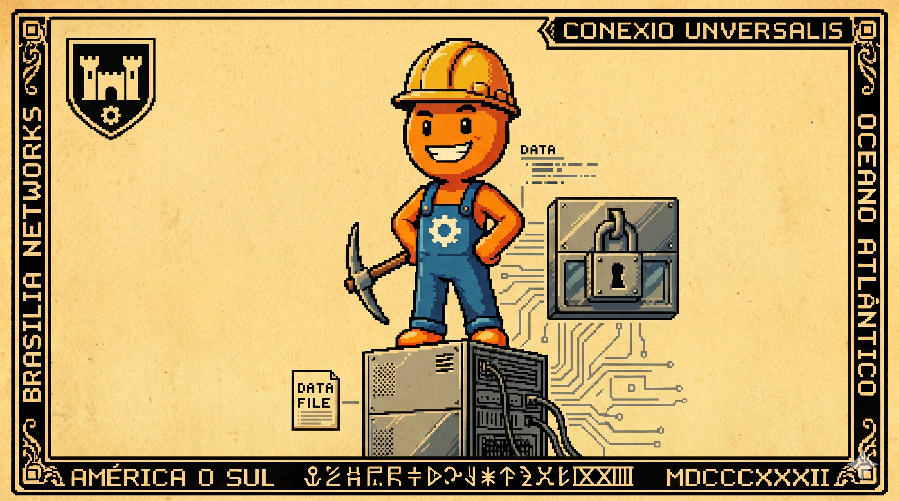

Canto III: A Redenção do SQLite Local
Disseram que banco leve não tinha segurança alguma,
Que banco de arquivo único quebra na primeira bruma.
Mas fomos cavar na rocha e achamos a solução:
O SQLite em WAL traz grande proteção!
Escreve sem dar bloqueio, responde na hora exata,
E o caixa passa o produto sem travar a maquininha barata.

O Problema de Bancos Pesados Locais
Muitos projetistas tentam resolver a autonomia das lojas instalando servidores de banco de dados relacionais completos (como PostgreSQL ou SQL Server Express) localmente no computador do caixa. Em computadores de caixas mais modestos ou antigos, esse consumo de CPU e RAM para manter daemons e sockets de conexões TCP/IP locais ativos pode virar um gargalo operacional, necessitando também de rotinas complexas de manutenção local (como vácuo de disco e monitoramento de logs de transações).
Embora mini-PCs modernos (como aqueles baseados em processadores Intel N100, Core i3 ou Ryzen 3) tenham poder de processamento suficiente para rodar instâncias locais desses servidores relacionais sem travamentos aparentes, a complexidade operacional de gerenciar a integridade desses daemons e portas de rede em milhares de caixas geograficamente espalhados permanece um desafio para as equipes de suporte técnico.
O SQLite e Alternativas de Mercado na Borda
No mercado brasileiro de varejo físico, existem soluções clássicas e eficientes para bancos embarcados, como o Firebird Embedded (amplamente utilizado por sua durabilidade de arquivo único). O DuckDB surge como outra opção de arquivo único, embora seja focado em consultas analíticas de grande volume (OLAP) e não em transações ACID rápidas de vendas (OLTP).
No caixa de varejo, a maior vantagem do SQLite é sua simplicidade operacional extrema: ele é apenas um arquivo em disco carregado in-process diretamente na JVM. Não há consumo de portas de rede de localhost, nem serviços em segundo plano a serem monitorados pelo sistema operacional.
Tabela Comparativa de Bancos de Dados na Borda
A tabela abaixo contrasta as características gerais dos modelos de bancos relacionais embarcados e servidores locais em hardware limitado de caixa:
Tunagem de Concorrência: Ativando o Modo WAL
Por padrão, o SQLite opera em modo DELETE, que bloqueia leituras enquanto ocorre uma escrita (modo de lock exclusivo). Em caixas de alto fluxo, leituras paralelas para relatórios locais ou sincronizadores Outbox travariam a tela de vendas frequentemente, gerando falhas de lock.
Ativando o modo WAL (Write-Ahead Logging), as escritas entram de forma sequencial rápida no arquivo de log temporário `.db-wal` enquanto os leitores consultam o arquivo principal `.db` simultaneamente de forma limpa.
Configuramos a concorrência via propriedades do driver JDBC:
- journal_mode=WAL: Habilita gravações no arquivo de log sem bloquear consultas de leitura concorrentes.
- synchronous=NORMAL: Reduz o número de chamadas físicas de sincronização de disco (`fsync`), aproveitando os buffers do sistema operacional de forma segura para garantir transações ACID.
- busy_timeout=5000: Define que a aplicação aguarde até 5 segundos para obter o lock de escrita antes de acusar erro.
Riscos Reais do WAL a Serem Contornados
Embora o WAL seja robusto, a arquitetura deve mitigar seus riscos conhecidos:
- Crescimento Descontrolado do Log: Se houver uma transação de leitura muito longa aberta em background, o SQLite não consegue consolidar os dados do arquivo `.db-wal` para o `.db` principal. Isso impede o Checkpoint automático de esvaziar o log, fazendo o arquivo `.db-wal` crescer até esgotar o disco do caixa.
- Múltiplos Processos e Corrupção: Se o arquivo de mapeamento de memória compartilhada `.db-shm` for bloqueado por antivírus agressivos instalados localmente no sistema operacional ou corrompido por falha grave de hardware, o SQLite impedirá o acesso ao banco até que os arquivos temporários sejam recriados.
- Desempenho em Discos Lentos: Em mídias muito lentas (como cartões MicroSD Classe 10 de baixa qualidade usados em Raspberry Pi), o processo de Checkpoint pode causar congelamentos breves de milissegundos se o volume de transações pendentes a consolidar for excessivamente alto.
Benchmarks Locais: WAL vs. Modo Tradicional
Metodologia do Teste: Medimos a latência de escrita sob concorrência (1 thread de escrita inserindo cupons de venda de 1.2KB com 5 itens em loop e 4 threads de leitura consultando dados paralelos) simulando uma carga contínua de 10.000 transações.
Limitações Reais: Onde o SQLite Não Serve
O SQLite é a ferramenta ideal para a borda autônoma, mas possui limites claros que delimitam o cenário de "quando não usar":
- Escrita Concorrente Centralizada: O SQLite suporta apenas um único escritor ativo por arquivo. Se você possui uma loja física onde múltiplos caixas ou operadores precisam gravar dados simultaneamente em um único arquivo de banco compartilhado via rede local (`file sharing`), o banco gerará conflitos frequentes. O SQLite exige um arquivo exclusivo por terminal físico.
- Segurança e Permissões Internas: Não há gerenciamento interno de usuários, privilégios de acesso (roles) ou restrições de tabelas. A segurança física é delegada às permissões de leitura/escrita do sistema operacional na pasta do arquivo.
- Falta de Replicação Síncrona Nativa: O SQLite não possui servidor TCP para replicação nativa. Replicação contínua local ou auditorias complexas distribuídas na mesma loja exigem soluções como Litestream, LiteFS ou tratamento complexo na camada de aplicação.
Código na Prática: Evitando Travamentos no Spring
Apenas mudar a URL do properties não impede todos os problemas. Na aplicação, as transações de gravação precisam ser rápidas e isoladas. Veja o exemplo de serviço com controle de transação e retentativa de gravação para contornar o erro `CannotAcquireLockException` (que ocorre se duas transações concorrentes tentarem gravar ou atualizar no SQLite ao mesmo tempo e estourar o limite de `busy_timeout` de arquivo bloqueado):
@Service
public class VendaService {
@Autowired
private VendaRepository repo;
@Transactional
public Venda concluirVendaComRetry(Venda venda) {
int tentativas = 3; // Padrão equilibrado para contornar eventuais conflitos temporários de lock
while (tentativas > 0) {
try {
return repo.save(venda);
} catch (CannotAcquireLockException | DataIntegrityViolationException e) {
tentativas--;
if (tentativas == 0) throw e;
try { Thread.sleep(100); } catch (InterruptedException ie) { Thread.currentThread().interrupt(); }
}
}
return null;
}
}
⚖️ O Veredito da Bancada (Técnico vs. Negócios)
💻 Para Técnicos (A Baseline)
Configure o datasource no application.properties:
spring.datasource.url=jdbc:sqlite:pdv.db?journal_mode=WAL&synchronous=NORMAL&busy_timeout=5000.
O modo WAL cria arquivos extras `.db-wal` e `.db-shm` para gerenciar o log de gravação compartilhado. Isso garante isolamento atômico ACID completo em transações concorrentes na borda com latência de gravação de apenas ~0.8 milissegundos.
👔 Para Negócios (O Retorno)
Zero custos de licença ou infraestrutura para servidores de banco locais na loja. O banco é imune a quedas de energia: se a tomada for desligada de repente no meio de uma venda, os arquivos não se corrompem e a operação volta exatamente de onde parou.
Conclusão da Persistência Local
O SQLite tunado em modo WAL é a base ideal para prover persistência local estável e leve para pontos de venda físicos autônomos. Ele equilibra segurança ACID completa com simplicidade e consumo ocioso quase nulo de recursos (uma vez que não há daemons ativos, dependendo apenas do tamanho do cache alocado em memória pelo processo da aplicação e do mapeador temporário `.db-shm` gerado).
Resolvido o banco de dados da máquina, a próxima etapa da jornada é construir a interface com o operador do caixa. No próximo canto, discutiremos como renderizamos a tela localmente sem a complexidade pesada de frameworks JavaScript e pipelines de build usando HTML-First e HTMX.
Hashtags
Contato
- E-mail: suporte@caracore.com.br
- Site: www.caracore.com.br
- LinkedIn: Cara Core Informática
Entenda como o CaraCore PDV usa SQLite otimizado para manter suas vendas seguras e rápidas.
Conhecer Otimizações